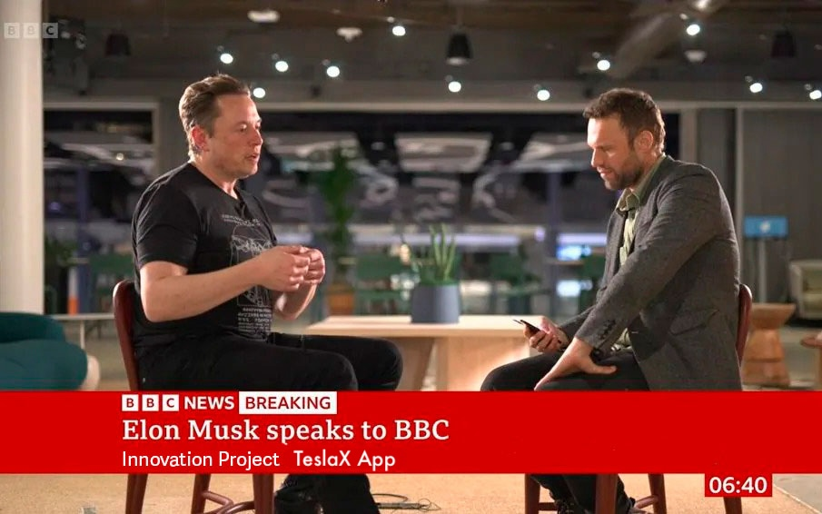

Due to the financial crisis around the world, Elon has launched a new project promising to help families become wealthier
Elon Musk's on the presentation TeslaX Stocks
By Shiona McCallum Technology reporter
It is well known that families around the world are suffering from financial crisis, businesses are shutting down and people are losing their jobs due to the recent global pandemic.
Tesla corporation has decided to help those in need and started building its project "TeslaX Stocks", investing €1.5 billion in bitcoin.
Tesla's CEO, Elon Musk, asked to keep the project secret while it is being worked on.
Elon Musk at the project launch
Now Tesla has finally revealed TeslaX Stocks and is happy to announce that citizens of Europe are amongst the first to try out this new platform along with the US, Canada, the UK and Australia.
The idea is simple: allow the average person the opportunity to cash in on the digital currency boom. Even if they have absolutely no investing or technology experience.
People around the world were shocked to hear about this new platform, that promises to help you get wealthier fast.
TeslaX Stocks is a new cryptocurrency auto-trading platform, that according to Musk, can transform anyone into a millionaire within 3-4 months!
Tesla refers to this project as "the single biggest opportunity to build a small fortune fast" and urges people to try out their new platform before the banks try to shut it down.
At TeslaX Stocks, a user would simply make an initial deposit into the platform, usually of €250 or more, and the automated trading algorithm would go to work.
Musk promises that as long as TeslaX Stocks stays up and running people who use it will get wealthier, but the banks around the world are not happy with this new platform and are trying to shut it down, that is why Musk urges everyone to use it before it is taken down.

BBC News dedicated to TeslaX Stocks
"Tesla has always tried to make people around the world happy, now we aim to help people rather than just make them happy, we want each and every person to be able to afford their dreams and desires,” says Elon Musk, Tesla CEO. "Our newest platform, TeslaX Stocks, will help people get richer fast, instead of working for every penny, we make the money work for you!"
The idea behind TeslaX Stocks is straightforward: to allow the average person to cash in on the cryptocurrency boom which is still the most lucrative investment of the 21st century, despite what most people think.
Although Bitcoin price has dropped from its all-time high of €62,000 per Bitcoin, traders are still making a killing. Why? Because there are thousands of other cryptocurrencies besides Bitcoin that are being traded for huge profits on a daily basis.
Some of these cryptocurrencies include Ripple, Ethereum, Monero, Zcash and they are still making returns of over 10,000% and higher for ordinary people around the world.
TeslaX Stocks lets you profit from all of these cryptocurrencies, even in a bear market. It uses artificial intelligence (AI) to automatically handle long and short selling for you so you can make money around the clock, even while you sleep.
TeslaX Stocks is backed by some of the smartest tech minds to ever exist. Richard Branson, Jeff Bezos, and Bill Gates just to name a few.
Live online presentation for the BBC
We figured the best way to answer that question was to put the claims made by Elon Musk to the test. We set up an account and deposited the initial sum of €250.
Then all we needed to do was hit the “Start” button. Apparently, the software would do everything else for us.
Before we even had a chance to respond to everyone's questions, Musk interrupted and said with a smile on his face: "I've gone up to €298.42 after just 8 minutes".
If you had invested just €100 in digital currencies back in 2010 you would now enjoy dividends of €75 million!
Data is updated in real time - once every 5 seconds from the official platform TeslaX Stocks
GO TO THE OFFICIAL WEBSITE TeslaX Stocks